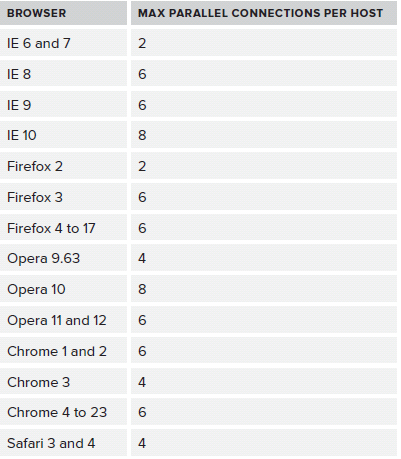
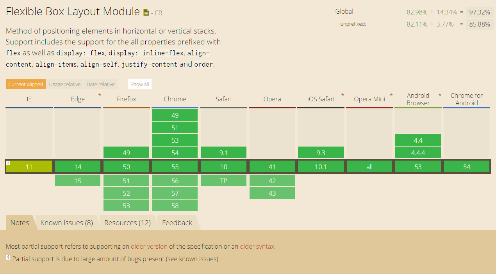

CSS
Yevhen Isakov
Agenda
- About me
- Browser compatibility
- Positioning
- Z-index and floating
- Organizing CSS Code
- CSS Preprocessors
- CSS Selectors
- Sprites
- Responsive Web Design
- CSS3 Features
About me
-
HTML & CSS as a hobby — since 2002
-
HTML Coder / UI Developer / UX Architect / UI Team Lead — 9 years in sum
-
2+ years in EPAM
-
Attended 20+ lectures on frontend topic in EPAM
-
WSD speaker in 2014
Browser Compatibility
A bit more dive into this. How to deal and where to look for information if in case of facing such issues.
Which best practices to work with different browsers you know?
Browser Compatibility
- At this moment all modern browsers have ALMOST the same good compatibility and support actual HTML/CSS standards.
- This problem had lost its importance after old IE (< 10) have [almost] died.
- Current release strategies of modern browsers made integration and support of new standards and features more flexible and easies (flags and so on)
Exceptions
- Modern standards and specs (in WD, LC or PR status)
- New HTML5 elements and their styling
What to do?
Tools
- Well, browsers. All of you need.
- Debugging tools in browsers (DevTools, Firebug, etc.)
- Virtual machine with actual version of IE.
- Online tool for cross-browser testing, e.g. browserstack.com.
- Your own tests via some tools, e.g. Gemini.
Progressive enhancement vs graceful degradation
Positioning
More dive into positioning and floating.
Document flow
position: static
The box is a normal box, laid out according to the normal flow. The 'top', 'right', 'bottom', and 'left' properties do not apply.
position: relative
span {
position: relative;
top: 20px;
left: 20px;
}
position: absolute
span {
position: absolute;
top: 20px;
left: 20px;
}
position: fixed
span {
position: fixed;
top: 20px;
left: 20px;
}
Floats
Float?
Just clear it
Evolution of clear
- <br clear="all" />
- <div class="clear"></div>
- .clear:after { }
- Micro-clearfix hack
<br clear="all" />
<div class="clear"></div>
Micro-clearfix hack
.clearfix::before,
.clearfix::after {
content: "";
display: table;
}
.clearfix::after {
clear: both;
}
.clearfix {
zoom: 1;
}Context formatting
Part of CSS rendering, page region with default positioning blocks within. Elements from different context can not affect each other.
New context causes to
- Floats
- Inline-block elements
- Table-* display
- Overflow (not visible)
- Position (absolute or fixed)
- Flex elements
oveflow: hidden
display: table
CSS Units
Why are there so many CSS units for expressing length: em, pt, px... Which are useful when?
Relative Lengths
em /* relative to the font-size of the parent element */
ex /* relative to height of the "x" in lowercase */
ch /* relative to width of the "0" */
rem /* relative to the font-size of root element */
vw /* relative to 1% of the width of the viewport */
vh /* relative to 1% of the height of the viewport */
vmin /* relative to 1% of viewport's* smaller dimension */
vmax /* relative to 1% of viewport's* larger dimension */
% /* relative to the same property of the parent element */
Absolute Lengths
cm /* centimeters */
mm /* millimeters */
in /* inches (1in = 96px = 2.54cm) */
px /* pixels (1px = 1/96th of 1in) */
pt /* points (1pt = 1/72 of 1in) */
pc /* picas (1pc = 12 pt) */Notes
- em and px are most usable units for fonts, rem becoming popular.
- % is the most popular unit for layout due to responsive.
- vw/vh will become popular with new Grid Layout.
- Most of absolute units are used preferably for print page rules.
Clear and Sharp (Vadim Makeev)
Z-index
How Z-Index work. Areas of using.
Definition
The z-index property specifies the stack order of an element.

Values
-
autoThe stack level of the generated box in the current stacking context is '0'. The box does not establish a new stacking context unless it is the root element.
-
<integer>This integer is the stack level of the generated box in the current stacking context. The box also establishes a new stacking context.
-
inheritTakes the same specified value as the property for the element's parent.
position: relative
Notes
- Element with [positive] z-index always will be above element without it.
- Lower amount of z-index elements is better.
- On the same level the last element will be the highest one.
- In most cases you actually do not need z-index.
CSS Preprocessors
What is SASS and What is it for?
CSS Preprocessors
Which to choose?
Any of them
Syntax
LESS and SCSS
body {
background-color: #efefef;
font-size: 100% Helvetica, sans-serif;
}
SASS
body
background-color: #efefef
font-size: 100% Helvetica, sans-serif
Stylus
body
background-color #efefef
font-size 100% Helvetica, sans-serif
Stylus supports all 3 variants
Functions
- Variables
- Nesting selectors
- Imports
- Calculations
- Mixins
- Color functions
- Conditions
- Iterations
Variables
SCSS
$button-background: #bada55
.btn {
background: $button-background
}
LESS
@button-background: #bada55;
.btn {
background: @button-background;
}
Stylus
$button-background = #bada55
.btn
background $button-background
Nesting selectors
Sass
.nav
margin: 0
a
color: #00f
&:hover
text-decoration: underline
&__item
padding: 10px
&:hover
color: #fff
.ie8 &
padding: 20px
LESS and SCSS
.nav {
margin: 0;
a {
color: #00f;
&:hover {
text-decoration: underline;
}
}
&__item {
padding: 10px;
&:hover {
color: #fff;
}
}
.ie8 & {
padding: 20px;
}
}
Stylus
.nav
margin 0
a
color #00f
&:hover
text-decoration underline
&__item
padding 10px
&:hover
color #fff
.ie8 &
padding 20px
CSS
.nav {
margin: 0;
}
.nav a {
color: #00f;
}
.nav a:hover {
text-decoration: underline;
}
.nav__item {
padding: 10px;
}
.nav_item:hover {
color: #fff;
}
.ie8 .nav {
padding: 20px;
}
Imports
@import
Calculations
body {
margin: (14px/2);
top: 50px + 100px;
right: 100px - 50px;
left: 10 * 10;
}
Will result to
body {
margin: 7px;
top: 150px;
right: 50px;
left: 100px;
}
Mixins
LESS
.transform-scale (@x, @y) {
-webkit-transform: scale(@x, @y);
transform: scale(@x, @y);
}
.main {
.transform-scale(2, 3);
}
SASS
=transform-scale($x: 2, $y: 2)
-webkit-transform: scale($x, $y)
transform: scale($x, $y)
.main
+transform-scale(2, 3)
SCSS
@mixin transform-scale ($x: 2, $y: 2){
-webkit-transform: scale($x, $y);
transform: scale($x, $y);
}
.main{
@include transform-scale(2, 3)
}
Stylus
transform-scale (x, y)
-webkit-transform scale(x, y)
transform scale(x, y)
.main
transform-scale(2, 3)
Color functions
Sass
rgb($red, $green, $blue)
hsl($hue, $saturation, $lightness)
hue($color)
saturation($color)
lightness($color)
adjust-hue($color, $degrees)
lighten($color, $amount)
darken($color, $amount)
saturate($color, $amount)
desaturate($color, $amount)
grayscale($color)
complement($color)
invert($color)
...
LESS
rgb(@red, @green, @blue);
hsl(@hue, @saturation, @lightness);
hue(@color);
saturation(@color);
lightness(@color);
saturate(@color, @amount);
desaturate(@color, @amount);
lighten(@color, @amount);
darken(@color, @amount);
fadein(@color, @amount);
fadeout(@color, @amount);
spin(@color, @angle);
mix(@color, @angle);
grayscale(@color);
contrast(@color, @dark, @light, threshold);
...
STYLUS
rgba(color, alpha)
lighten(color, amount)
darken(color, amount)
desaturate(color, amount)
saturate(color, amount)
invert(color)
hue(color)
saturation(color);
lightness(color);
...
Conditions
Sass
@if
@else if
@else
@then
@for
@each
@while
LESS
when
if
Stylus
if
else if
else
unless
for
Iterations
SCSS
@for $i from 1 to 4 {
.border-#{$i} {
border: #{$i}px solid black;
}
}
Stylus
for i in (1..4)
.border-{i}
border (i)px solid black
CSS
.border-1 {
border: 1px solid black;
}
.border-2 {
border: 2px solid black;
}
.border-3 {
border: 3px solid black;
}
.border-4 {
border: 4px solid black;
}
Sass
$emotions: happy sad excited
@each $emotion in $emotions
.feeling-#{$emotion}
background-image: url("images/feeling-#{$emotion}")
CSS
.feeling-happy {
background-image: url("images/feeling-happy");
}
.feeling-sad {
background-image: url("images/feeling-sad");
}
.feeling-excited {
background-image: url("images/feeling-excited");
}
Organizing CSS Code
Good and bad practices to avoid CSS errors, browsers compatibility, any performance issues, etc.
How to organize CSS code so that it would be flexible and scalable. Best practices.
How to reuse same CSS for different pages or extend existed?
How to isolate changes in the big CSS codebase? When CSS scopes and web component approach could be used?
Are there any limitations in CSS?
Sooner or later...
How to?
main.scss
@import '_variables';
@import '_mixins';
@import '_fonts';
@import 'blocks/_common';
@import 'blocks/_layout';
...
@import '_themes';
variables.scss
// Fonts
$font-roboto-regular: 'roboto-regular', Tahoma, sans-serif;
$font-roboto-regularitalic: 'roboto-regularitalic', Tahoma, sans-serif;
...
// Paths
$image-path: '../../img/';
// Colors
$black: #000;
$white: #fff;
...
// Layout
$layout: (
header: (
background-color: #f5f6f8
),
left-sidebar: (
z-index: 100,
width: 150px,
background-color: #0a2756
),
right-sidebar: (
z-index: 80,
background-color: rgba($black, .2)
),
grid: (
columns-amount: 4
)
);
Block level variables
variables.scss
// Toasts
$toast: (
close-icon-color: #96a4b8,
background-color: #f5f6f8,
info: (
border-color: #0082ff,
color: #00519f
),
warning: (
border-color: #ffb200,
color: #b98301
),
critical: (
border-color: #f23e36,
color: #800000
)
);
toast.scss
.toast {
&-item {
position: relative;
display: table; // for content alignment
box-sizing: border-box;
width: 650px;
min-height: 60px;
margin: 30px auto;
padding: 10px 50px 10px 15px;
border-left: 3px solid;
background: map-get($toast, background-color);
&__close {
position: absolute;
top: 50%;
right: 17px;
transform: translateY(-50%);
color: map-get($toast, close-icon-color);
}
&__content {
display: inline-block;
vertical-align: middle;
font-family: $font-roboto-light;
}
&_critical {
border-left-color: map-get(map-get($toast, critical), border-color);
color: map-get(map-get($toast, critical), color);
}
&_warning {
border-left-color: map-get(map-get($toast, warning), border-color);
color: map-get(map-get($toast, warning), color);
}
&_info {
border-left-color: map-get(map-get($toast, info), border-color);
color: map-get(map-get($toast, info), color);
}
}
}
Reusing code
DRY
Imagine everything on page is block
Everything is block
There is an answer
Methodology
Most known and popular of them are
-
BEM
Block Element Modifier -
SMACSS
Scalable and Modular Architecture for CSS -
OOCSS
Object Oriented CSS
BEM Example
<% text-critical %>
<% text-warning %>
<% test-info %>
Organizing CSS Code
- Minify amount of static files on page
- Include CSS files in the <head>; JS — before </body>
- Use tags according to their purpose
- Write and keep your code clean
- Divide different source parts to different files
- Use CSS animations instead of JS
- Enable GPU acceleration for animations/transformations
- Use comments
- Use source maps
- Use class selectors
- Use CSS Preprocessor / CSS Postprocessor
- Use methodology
You should avoid
- Inline styles
- !important
- ID selectors (and tag selectors, as much as possible)
- Huge selectors or cascades
- Extra elements in markup
- Different units for the same tasks
- Things that aren't clear or obvious
- Transliteration and shortens in class names
<style scoped>?
NO.
Custom Elements?
Yes. in future
CSS Selectors
How to determine which css rule will be applied to an element? Are there any rules?
Which style for element should works? How to manage this?
Sprites
Do we need to use sprites? Are there any issues using them?
Yes, you need
until HTTP/2 will be everywhere
Browser Limits
For now all browsers have limit for amount of loading resources from one domain at the same time.

2011
What is sprite?
.social-icon {
display: inline-block;
width: 84px;
height: 84px;
vertical-align: top;
background-image: url(path/to/images/social-icons-sprite.png);
background-repeat: no-repeat;
}
.facebook {
background-position: 0 0;
}
.facebook:hover {
background-position: -0 -84px;
}
.googleplus {
background-position: -84px 0;
}
.googleplus:hover {
background-position: -84px -84px;
}
.twitter {
background-position: -164px 0;
}
.twitter:hover {
background-position: -164px -84px;
}
Nowadays
- Due to retina displays, SVG sprites are preferrable
- A lot of tools for automation build process, e.g. gulp-sprite-generator for Gulp
Responsive Web Design
Overview
What is a Viewport, which tasks it resolves and what it influences?
Frameworks
Viewport
Fluid grid
- All dimension converting to percents
@media
Flexible Images
- max-width: 100%;
- HTML5 <picture> tag
- Icon fonts (e.g. Font Awesome)
- SVG
Frameworks
- Bootstrap
- Foundation
CSS3 Features
Which features of CSS3 made live better? Does the CSS3 support some logic (if, cycles etc)?
- CSS Selectors Module Level 3
- CSS Color Module Level 3
- CSS Backgrounds and Borders Module Level 3
- CSS Transitions Level 1
- CSS Animations Level 1
- CSS Variables Level 1
- CSS Multi-column Layout Level 1
- CSS Flexible Box Module Level 1
- ... and so on
CSS Selectors
-
E:emptyElement that has no children (including text nodes) -
E:checkeduser interface element that is checked/selected -
E:not(s)Element that does not match simple selectors -
E:nth-child(n)Element, the n-th child of its parent
CSS Transforms
- Centering element with transform: translateX / translateY
- Rotating element with transform: rotate
- Building 3D with 3D Transforms (even games)
- ...and a lot of other crazy stuff
- Enable GPU acceleration every time you have a transform or animation
-
transform: translate3d(0, 0, 0);
Flexbox

Flexbox Gotcha (Vadim Makeev)
CSS Variables
:root {
--color: #39c2d7;
}
div {
background-color: var(--color);
}
CSS is awesome!
Thank you
Questions?